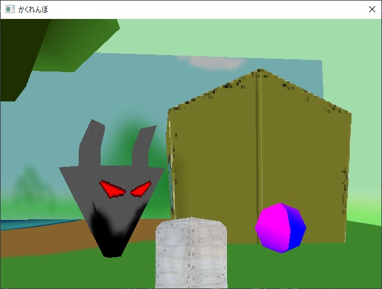
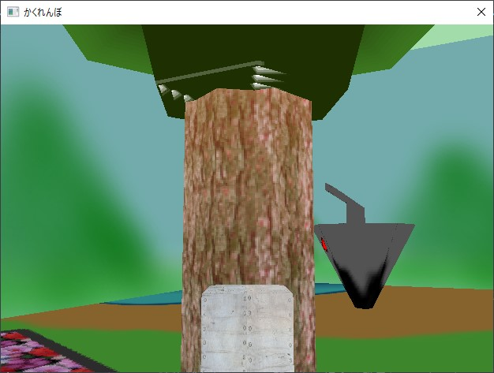

今更ながらDirectX"9"
久しぶりの投稿。
というのも、今までDirectX9の勉強をしていました。
なぜ今更DirectX9？
現時点での最新バージョンは「DirectX12」のはずなのになぜ今更DirectX9を勉強していたのかというと、3Dの知識に詳しい先生から
「3Dの知識がない状態からゲームを作るなら、DirectX9から始めるとわかりやすくていいよ」
との助言をいただいたため、もともとはDirectX"11"を勉強しようとしていたものの、さらに昔のバージョンのDirectX9から勉強することにしました。
↓勉強に使った本はこちら(中古のため、リンク切れの可能性あり)
15歳からはじめるDirectX 9 3Dゲームプログラミング教室 C++編
発行されたのはなんと2007年と、かなり昔の本です。
そもそもDirectX9自体が昔過ぎてほとんど廃版になっている中、数少ない入門書です。
僕が購入した際には700円程の安い値段で購入でき、状態も良くてCD-ROMも未開封でついていました。
早速作ってみた
一通り読みながら、本に書いてあった２種類のゲームを作ってみました。
※本に書いてあるコードをほとんど丸写ししただけなので、コードは記載しません。
・隕石ゲーム
自機を操作して上から来る隕石を避けるゲーム。
当たるとゲームオーバー。
・かくれんぼゲーム
敵につかまらないように一定時間逃げるゲーム。
一定時間が経つと弱体化モードになるので、その時に捕まえるとクリア。
木の裏に隠れるとちゃんと見つからない
よかったところ
・「１５歳から始める」とあるように、初歩の初歩から丁寧に書かれている。
・付属のCD-ROMにソースコードや3Dモデルなどもすべて用意されている。
気になったところ
・書籍内で音を鳴らすために使用しているライブラリが現時点でサポートされていないため、別のライブラリを使用する必要がある。
→調べてみたところ、「XAudio2」というライブラリを使うのがよさそう？
一通り読んでみて
僕が探した中で数少なかったDirectX9の入門書、なおかつ唯一のゲームプログラミングについての本だったため、ギリギリ中古で残っていてくれてよかった...と思った。
次はいよいよDirectX9で１からゲームを作りたいと思います！
2024/04/21
ブログ記事一覧に戻る